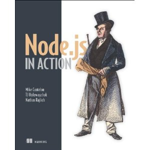
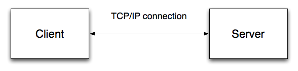
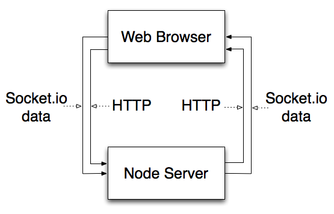
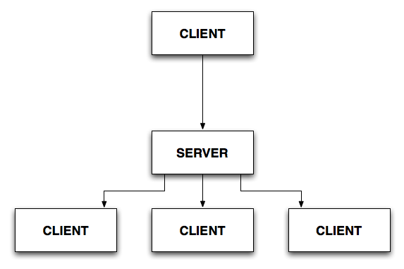
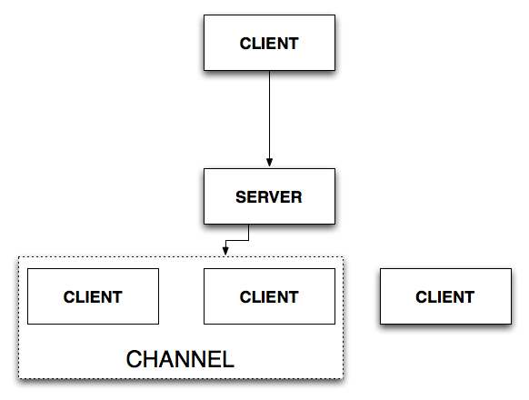
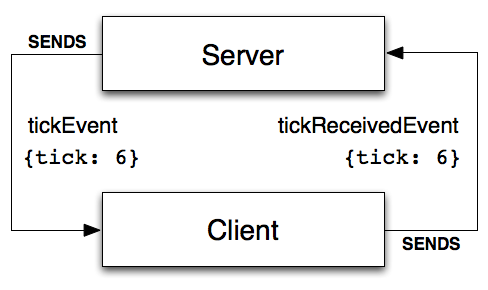
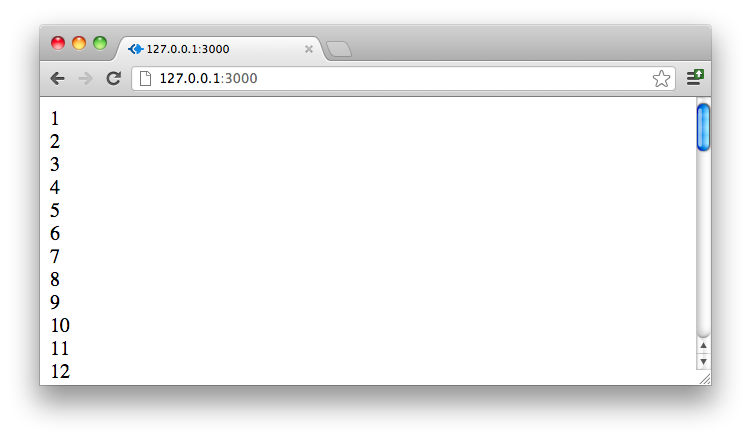
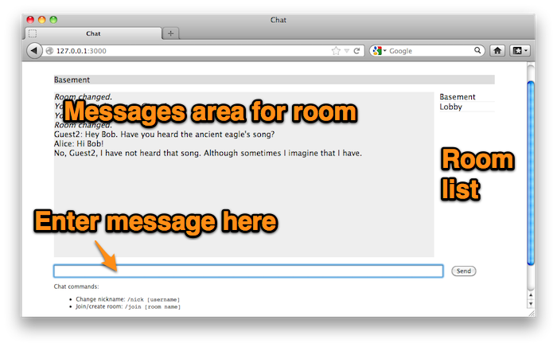

Socket.io: a sack
full of good times
Mike Cantelon
Nov 1, 2012
Mike Cantelon
Nov 1, 2012




This works with the HTTP module and Express!
Some JQuery AJAXing:
$.ajax({
url: 'http://www.bahamen.com/ajax/question',
type: 'POST',
data: {
'message': 'Who let the dogs out?'
}
});
This would be nicer:
send('question', {
'message': 'Who let the dogs out?'
});


Socket.io uses "event emitters" for client and server.
socket.emit('eventType', eventData);
socket.on('eventType', function(eventData) {
// do some things
}


var http = require('http')
, socketio = require('socket.io')
, fs = require('fs');
fs.readFile('./index.html', function(err, fileData) {
var server = http.createServer(function(request, response) {
response.writeHead(200, {'Content-Type': 'text/html'});
response.end(fileData);
});
server.listen(3000);
// we'll add socket.io code here!
});
...
var io = socketio.listen(server);
io.on('connection', function(socket) {
var tick = 0;
setInterval(function() {
tick++;
socket.emit('tickEvent', {'tick': tick});
}, 1000);
socket.on('tickReceivedEvent', function(tickData) {
console.log('Socket %s got %d', socket.id, tickData.tick);
});
});
...
<html><body>
<script src='/socket.io/socket.io.js'></script>
<script>
window.onload = function() {
var socket = io.connect();
socket.on('tickEvent', function(tickData) {
document.write(tickData.tick + '<br/>');
socket.emit('tickReceivedEvent', {
'tick': tickData.tick
});
});
}
</script>
</body></html>

Users gets assigned screen name but can change it using a chat command like:
/nick Goatlorde
Users can join/create chat rooms using a chat command like:
/join YogaFans
socket.join('Lobby');
socket.leave('Lobby');
socket.broadcast.to('Lobby').emit('eventType', eventData);
io.sockets.in('Lobby').emit('eventType', eventData);
io.sockets.manager.rooms
You get data like this:
{ '':
[ '1493563052698187148',
'1804042744551045346',
'19056402231855815978' ],
'/Lobby': [ '1493563052698187148' ],
'/Cellar': [ '1804042744551045346', '19056402231855815978' ] }Provide array of socket objects, not IDs, in room
io.sockets.clients('Lobby');
socket.on('disconnect', function() {
// free up client's nickname
});
Socket.io has mechanism for this...
Client emits, defining callback:
socket.emit('eventType', eventData, function (ack) {
console.log(ack); // do something with acknowledgement
});
Server receives, fires callback:
socket.on('eventType', function (eventData, fn) {
fn('Message received!');
});
Specify on the server:
io.of('/chat').on('connection', function (socket) {
// deal with socket
});Then connect with the client:
io.connect('http://thing.com')io.connect('http://thing.com/chat')Run your app set to production mode:
$ NODE_ENV=production node app.js
Configuration in Socket.io is Express-style:
io.configure('production', function(){
io.enable('browser client minification');
io.enable('browser client etag');
io.enable('browser client gzip');
io.set('log level', 1);
});
The default transports might not be what you want, but you can change that.
Enabling specific transports:
io.configure('production', function(){
io.set('transports', [
'websocket',
'flashsocket',
'htmlfile',
'xhr-polling',
'jsonp-polling'
]);
});
Configure to use RedisStore:
var redis = require('socket.io/node_modules/redis'),
RedisStore = require('socket.io/lib/stores/redis'),
pub = redis.createClient(),
sub = redis.createClient(),
client = redis.createClient();
io.set('store', new RedisStore({
redisPub: pub,
redisSub: sub,
redisClient: client
}));
Storing data:
socket.set('key', value, function () {
// do the next thing
});
Retrieving data:
socket.get('key', function (err, value) {
// do something with value
});
Official site:
Github project site:
github.com/LearnBoost/Socket.IO
Wiki (lots of stuff):
Twitter: @mcantelon
Slides: mikecantelon.com/talks/socket